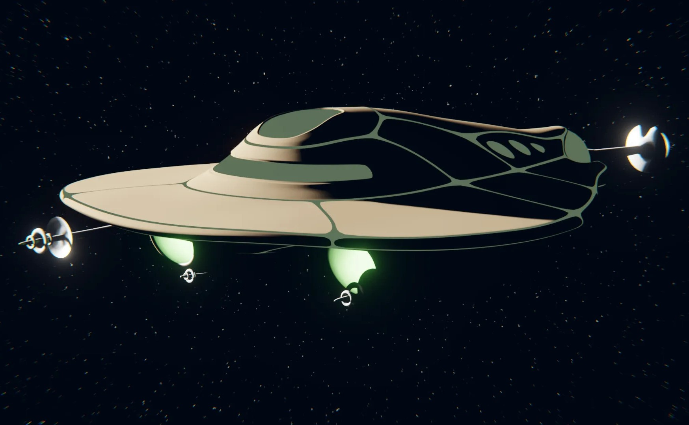

-
 See more...
See more...Pencil, Pen, and Charcoal
A selection of pieces I've rendered in grayscale.
-
 See more...
See more...2D Digital Art
This section contains both colored line drawings as well as some pixel art.
-

See more...
3D Digital Art
I started learning artistic 3D modeling in 2018, and it quickly became one of my favorite mediums.
-
 See more...
See more...Paintings
Acrylic and watercolor pieces I've painted over the years.